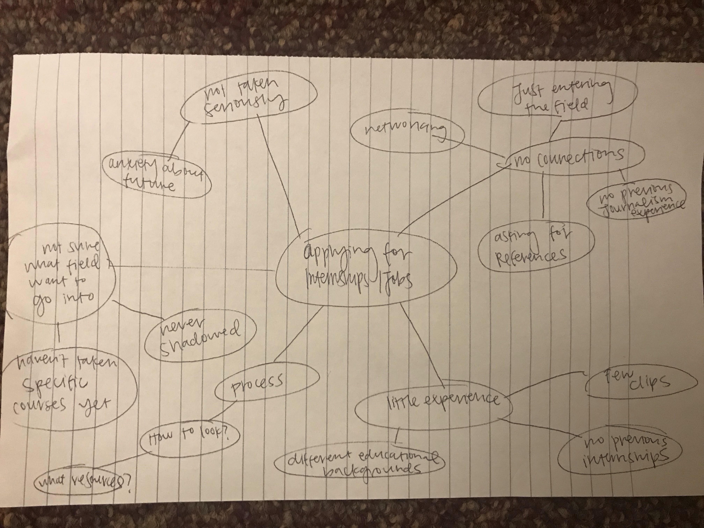

Philip Merrill College of Journalism graduate students are generally concerned about their ability to get internships while in school and to get jobs after graduation. Since graduate students have different educational backgrounds, they don’t have the same journalism experience when applying for internships and jobs. For example, by the time an undergraduate student applies for an internship, they have had a few years worth of experience, many clips and a couple of internships. When a graduate student begins applying for internships, they will only have had two months of classes and limited numbers of journalism clips, if any.
Furthermore, journalism graduate student don’t have industry connections as they are are just entering the field and come from all around the country. They often feel like they are underqualified and not taken seriously. This can sometimes lead to anxiety and uncertainty about the future. We would like to address this challenge and help journalism graduate students in their search for internships and jobs.
As Philip Merrill College of Journalism graduate students ourselves, we understand to an extent the problems that we and many in our cohort face, including the application process for jobs and internships. We began our brainstorming by creating a mind map and laying our concerns out on paper.
As we discussed the challenges mapped out above, we saw that there was a need for more career development and networking opportunities for graduate students. In addition, we also believe that graduate students would benefit from seeing how media and news organizations operate on a daily basis.
We also observed that graduate students struggle with finding information about journalism related jobs and internships. While many rely on Merrill College's internship coordinator Adrianne Flynn for news about job opportunities, students expressed their hopes to see a more streamlined and specific source for internship and job related postings.
Our goal with this project is to simplify the career and internship finding process for journalism graduate students at the University of Maryland. We want to ease stress and uncertainty about future employment, help students develop relationships with professionals in the industry and give them the tools to gain the experience they need to market themselves to potential employers.
We will know we are successful in this pursuit if graduate students are less stressed about seeking jobs and internships, if they know how to market their unique skill set, and if they are confident about going into the field of journalism.
In the last decade, the organization and format of newsrooms has increasingly changed, in large part due to the shift to online platforms. Employers are increasingly searching for journalism students, both undergrad and graduate, with multimedia skills. A 2018 study of 1,108 job postings found that employers were keen on finding applicants with web/multimedia skills, previous experience, strong writing skills, social networking skills, ability to work in a team and under a tight deadline, etc. Meanwhile, applicants were most interested in reporting, producing, web writing and web producing. Accordingly, while much value is still placed in traditional journalism, the shift towards video and web content has amplified the skills required when applying for those jobs.
The rise of social media and decline of traditional newspapers has prompted many journalism students to learn more multimedia skills throughout their journalism education. A 2016 study found students have a desire to acquire new skills, but some lacked confidence in their abilities. This often inhibits students from seeking jobs and internships that require a diverse skillset other than writing. However, the study shows that students who have taken multimedia courses not only strengthen their technological skills, but also strengthen their storytelling, written and interviewing skills.
In keeping with the changing times, universities across the country have had to alter their curriculums to reflect the growth in digital media. The University Southern California, for instance, valued the importance of adapting to new technologies as the news industry continues to change and shift towards a digital presence is evident by intrducing more video production and social media classes, according to an article by NeimanLab.
Pew Research, a nonpartisan think tank, compiles and analyzes trends and patterns in the news media. Pew issues an annual assessment called “State of the News Media,” which reports “on key audience and economic indicators for a variety of sectors within the U.S. news media industry,” according to Pew's website. Surprisingly, in 2017, the audience for almost every news sector declined - except for radio. Another interesting fact is that digital revenue is largely dominated by Google and Facebook. Overall, Pew provides a number of factsheets and statistics related to the news industry which we could use to support our project.
Every year, the United States Bureau of Labor Statistics releases information about employment in several sectors. One concern many graduate students voiced was finding a job in the news industry, which has seen a recent uptick in the number of layoffs. An analysis of employment numbers for news analysts, reporters and correspondents between 2012 to 2018 from the Bureau of Labor Statstics confirms the decline in media jobs, as shown in the graph below.
Each of us is already a graduate student in the Philip Merrill College of Journalism, so we are at the same time, our study’s target audience. We know that the prospect of finding a job after graduation is daunting and stressful. We know that we only have 18 months to spend in the master’s program. We know that, as adults, we often tend to have more going on in our lives and find it more difficult to manage the demands of coursework along with real-world responsibilities. We know that it’s entirely possible to graduate this program and not have a full-time job offer lined up.
We’d like to know more about what challenges the journalism industry presents for new graduates. How do management and business practices affect whether a news organization is hiring, and if so, whom they hire? What skills are most valued in job candidates? What sort of background in terms of education and experience might make a job candidate emerging from a graduate program more desirable than someone who isn’t?
Our research thus far suggests that graduate students will fare better when working alongside distinguished faculty members who either have connections in the media industry or can serve as strong references for job candidates. In working on such projects, students not only have an opportunity to gain experience in larger and more in-depth journalism topics, but also to carry out some industry networking that could prove crucial in their search for a job after graduation. Students who either aren’t sure about which particular areas within journalism they’d like to focus on or haven’t had the opportunity to work alongside faculty who can help nurture their talents tend to have a greater sense of apprehension about their long-term employment prospects than those who have.
The people involved in our topic are primarily graduate students in the Philip Merrill College of Journalism. Our cohort consists of about 30 master’s students. Class size fluctuates by year, but generally there are about (70~) graduate students enrolled in a Merrill graduate program each year since 2015. According to the 2015 data, some 85% of enrolled graduate students attend school full-time, versus 15% who are part-time.
We of course aim to focus on graduate students in the journalism program who will be graduating within the calendar year. These individuals, while having a set graduation date in sight, still have some time to plan for their graduation and take measures like registering for classes that will bolster certain skills, apply for internships or fellowships, reach out to certain faculty members for project collaborations, etc. Our target audience has a clear vision of when they’ll be out of the program, but still have a fair amount of time to prepare for graduation and ensure that they’re hireable candidates once they do leave.
All currently enrolled graduate students in the journalism program are potential targets for our study. We want to include people from diverse backgrounds and fields of study--people who have limited or no prior journalism experience before beginning this program. We find this to be a representative sample of our cohort, most of whom obtained undergraduate degrees in other fields and didn’t come to this program with detailed knowledge of journalism. From an experience and skills set standpoint, these students would be at a comparative disadvantage for hiring by a news organization versus a senior undergraduate student who’s spent four years in the program. Graduate students present particular challenges in entering the journalism field professionally because they haven’t had as much time to develop skills and experience as undergraduates.
This persona represents a first year graduate student who is at the same spot we are-- the second semester of the master’s program. They haven’t had any journalism internships yet, and are looking to gain more experience to market themselves to potential employers. We envisioned Colleen Curran, who got her master’s degree in history before starting this program. She is new to the field of journalism, and wants to be more confident in networking, marketing her unique skillset and obtaining references.
This persona represents a second year graduate student who has a little bit of experience, maybe an internship or two under their belt, and is going to be looking for a full-time job upon graduation. They have more knowledge about the field than a first year graduate student, and have some advice to share with those that are just getting started. We envisioned Lindsay Huth, who will graduate in May with hopes of becoming a graphics reporter. Lindsay has had three internships during her time at Merrill and is well-versed in applications.
Career and Internship Development Director
This persona represents someone who has spent their career in journalism and understands the industry. They have connections and a large network and want to help students become reporters. We envisioned Adrianne Flynn, as students come to her for help starting their careers in journalism.
We decided that we wanted to interview graduate students in our cohort, a graduate student that is one year above us, and Adrianne Flynn, internship and career services counselor. To come up with questions, we discussed what we wanted to learn from them. We wanted to understand their backgrounds, why they wanted to pursue a career in journalism and a detailed report on their search for jobs and internships. We wanted to know the struggles they faced and the things that have been helpful to them so far in their search.
Each of our three team members interviewed two individuals. The interviews were either conducted in-person, on the phone or by email and each interview lasted about 30 minutes. In-person interviews were conducted in the journalism building. No equipment was used, but notes were taken either on the computer or on paper. We then used our notes to write up summaries of our conversations.
Colleen Curran
After completing a master’s degree in history at Boston College, Colleen held several different short-term jobs, but was never able to have a steady career in her field. Surprising to me, Colleen feels much better about her job prospects in journalism than in history. She feels like she is learning valuable skills like coding and data analytics that can be applied to any field. She is a lot more confident in getting a job after graduation than she does it getting a summer internship, which are extremely competitive.
Colleen doesn’t feel like her work stands out in any way, so she is hesitant in asking professors for references. She wants to be better at networking, make her cover letters stand out and understand what working in a newsroom is like. Because she has no experience in journalism, she’s not sure what she wants to focus on and how she will know how people in the industry work on a day-to-day basis.
Adrianne Flynn
She spent forty years reporting for The Arizona Republic. I’m lying. She’s not that old. But in any case, she had a substantial reporting career that ended as a Washington correspondent for the Republic before accepting a position as bureau chief at Philip Merrill’s Capital News Service. Flynn is currently a lecturer for the college as well as internships and career development coordinator.
Flynn noted that the most difficult hurdle graduate students in this program face is their limited prior experience in journalism and the short amount of time they spend in the program. Despite that, she finds graduate students’ backgrounds and past experiences can offer them a richer candidate profile versus a recently-graduated undergraduate student. Flynn said the journalism school tends to do a good job of linking undergraduate students to brilliant faculty members with numerous connections in the industry, and should do a better job of having graduate students make those same connections in the short amount of time they have here.
Lindsay Huth
In only her third semester at Philip Merrill, Lindsay has already had three internships: U.S. News & World Report, Kansas City PBS, and USA Today. She doesn’t have a job lined up after graduation, but uses Linkedin and journalism organizations like NICAR/IRE to find potential opportunities. Lindsay is organized in her pursuit of jobs and internships, and compiles a running list of places that she would like to work, continually updating the list with deadlines and new postings. She also uses Merrill College to network by reaching out to Rafael Lorente, Adrianne Flynn and Sean Mussenden for help.
The most helpful resource she’s encountered when looking for and applying to internships has been the News Nerdery Slack channel. “There are thousands of members all over the world, and they all post job opportunities they come across.” However, the channel is more focused on coders, rather than other types of journalists. She feels like a channel with opportunities in several journalism fields, not just coding, would be extremely helpful.
Ian Round
Ian Round is another first-year master’s student in the journalism program. He obtained a Bachelor’s degree in Spanish from Kenyon College in 2016. Prior to coming to Merrill College, he worked at the Johns Hopkins University School of Medicine Office of Research Administration in Baltimore.
Round has a sense of confidence in the skills he’s learning and their ability to help him land a job after graduation. He feels especially confident in the fact that as a graduate student, he’s working alongside outstanding faculty members with long, distinguished careers in journalism who can serve as strong references or help him make connections with hiring editors. At the same time, he claims to harbor a deep sense of apprehension about the continuous layoffs plaguing the journalism industry and worries that he’ll have to compete with more seasoned journalists who recently got laid off from their jobs when entering the market himself.
Interview conclusion
We heard from newer students especially that there’s a sense of uncertainty about their particular skills and experience and ability to find jobs and network once leaving the program. However, as students become more seasoned in the master’s track, they seem to feel more confident in their abilities and in the connections they’ve made with faculty members in the course of their studies.
We feel that one of the most significant challenges graduate students face is the fairly tight time window in which they can select particular skill sets to focus on as journalists and find particular faculty members to work alongside. Once those particular variables are decided upon, however, students appear to have a better sense of being “on track” to land a good job after graduation. Connections with faculty members who specialize in a given area as well as job and internship opportunities posted by the college seem to be especially valuable.
We wonder if there’s a way to ease students’ initial sense of uncertainty and perhaps ease them into their preferred area of focus with greater expedience. We wonder if any particular skill sets are more or less valued by employers in the journalism industry, and whether there’s a way to facilitate channels of interaction between newer students entering the program and expert faculty members who might be able to help them develop their skills.
We noticed that there was a common theme of insecurity about the future and stress about internships and jobs in the first-year graduate students that we interviewed. They expressed uncertainty about how to market themselves with their lack of journalism experience and connections. They also didn’t really know the best places to look for jobs and internships. We only interviewed one second-year graduate student and she expressed less fear than the first-year graduate students and seemed more hopeful for the future. She had already had quite a bit of success in getting quality internships and had great connections in the industry.
We learned from our research that publications are still looking to hire people with great writing skills, but there is an increased emphasis on multimedia and digital skills. But, surprisingly, one study actually showed that story quality was still valued by employers over production quality.
We are excited to dig more into how we can help students make connections in the industry early on and ease their fears about finding internships. We want to learn more about how students can market and network themselves to be attractive to future employers with their limited journalism experience.
Point of View Statement
Journalism graduate students need additional resources and direction to obtain internships because they often lack journalism experience and are unfamiliar with the industry.
How Might We